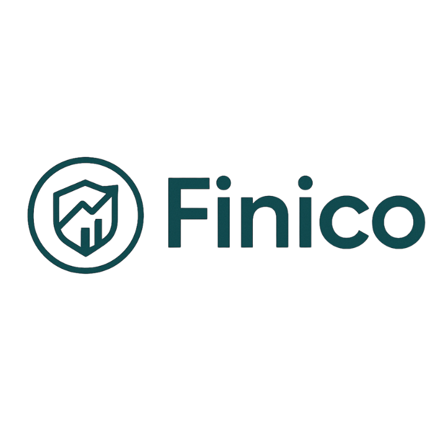

Finico — Personal Finance Platform
Empowering young earners to take control of their financial future through simple, visual planning tools.

Overview
Finico is a personal finance toolkit I'm building to help students and young professionals navigate their early earning years with confidence. The platform focuses on making budgeting, risk assessment, and long-term planning accessible and actionable — without the complexity that often comes with financial tools.
The Problem
Most financial tools are either too complex for beginners or too simplified to be truly useful. Young earners face a critical window where good financial habits can compound into significant long-term benefits, but many lack the structure and guidance to make smart decisions during this time.
Key Features
Budget Planning
Visual, intuitive budgeting that adapts to irregular income patterns common among students and early-career professionals.
Goal Tracking
Set savings goals and visualize progress with realistic timelines based on your income and spending patterns.
Risk Simulations
Understand financial risks through scenario-based simulations that show the impact of different choices.
Wealth Forecasts
Basic projections showing how small decisions today can compound into significant outcomes over time.
Net Worth Calculator
Track your total assets and liabilities to get a clear picture of your financial health and growth over time.
FD/DPS Tracker
Monitor fixed deposits and deposit pension schemes with maturity dates, interest tracking, and return calculations.
Current Stage
Finico is currently in early development. I'm conducting user research with students and young professionals to validate feature priorities, refine the product vision, and explore pricing models that balance accessibility with sustainability.
Impact Goal
The goal isn't just to create another budgeting app — it's to build a tool that genuinely helps young people develop better financial decision-making skills that serve them for life. Success means users feel more confident, informed, and in control of their financial futures.